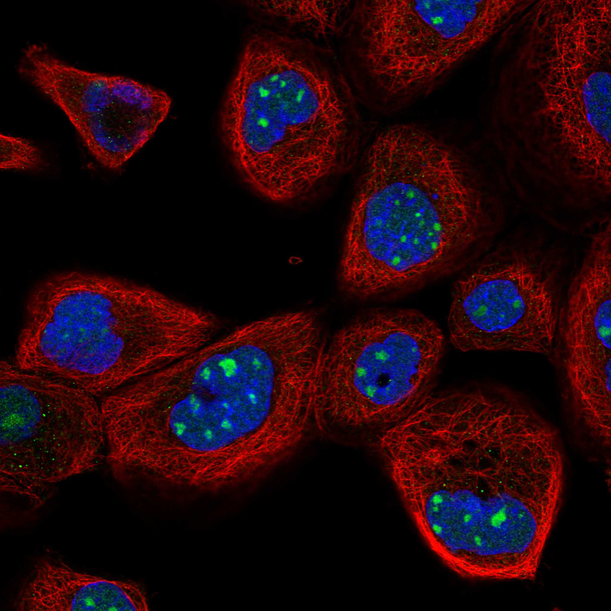
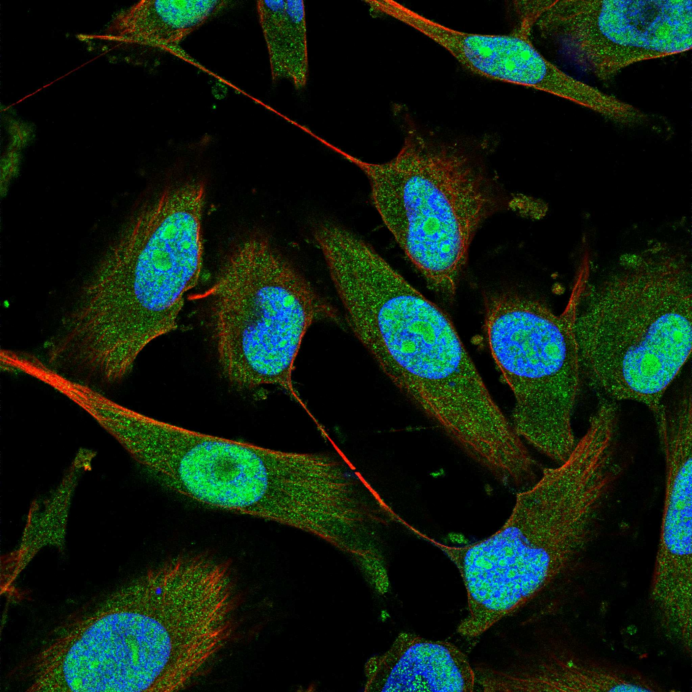
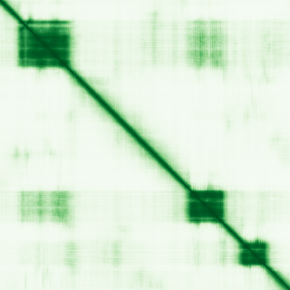

type: protein-evaluation gene: "HOMEZ" date: 2026-06-01 tags: [protein-scout, nucleoplasm, evaluation] status: scored ---
HOMEZ 核蛋白评估报告
1. 基本信息
| 项目 | 内容 |
|---|---|
| 基因名 / 别名 | HOMEZ / KIAA1443 / Homeobox and leucine zipper protein Homez |
| 蛋白全名 | Homeobox and leucine zipper protein Homez |
| 蛋白大小 | 550 aa / 61.2 kDa |
| UniProt ID | Q8IX15 |
HPA IF 图像:  
2. 评分总览
| 维度 | 得分 | 新权重 | 加权后 | 关键证据摘要 |
|---|---|---|---|---|
| 核定位特异性 | 6/10 | x4 | 24.0 | HPA Supported: Nucleoli (main) + Nucleoplasm (additional) + Cytosol; UniProt: Nucleus (ECO:0000269); GO: nucleoplasm+nucleolus (IDA) |
| 蛋白大小 | 6/10 | x1 | 6.0 | 550 aa, 61.2 kDa, 中等大小 |
| 研究新颖性 | 10/10 | x5 | 50.0 | PubMed strict=10, 极度新颖 |
| 三维结构 | 6/10 | x3 | 18.0 | PDB: 2ECC (NMR, homeobox), 2YS9 (NMR, leucine zipper); AlphaFold pLDDT=58.9, pct>90=10.9% |
| 调控结构域 | 7/10 | x2 | 14.0 | Homeobox + leucine zipper; predicted transcriptional regulator |
| PPI 网络 | 6/10 | x3 | 18.0 | IntAct: 14-3-3 family x6 (coIP), SMYD1/DEF6/LNX1/MED18/SDCBP (Y2H), PPP1CA, Bap1, DGCR6, GTF2IRD1; STRING: HOXC8/SMYD1/PPP1CA (exp) |
| 加权总分 | 130/180** | |||
| 互证加分 | +1.0 | IntAct+STRING+UniProt 多次出现 SMYD1/PPP1CA/DEF6; HPA+UniProt+GO 定位一致 | ||
| 归一化总分 (÷1.83) | 71.0/100** |
3. 详细分析
3.1 核定位证据
| 来源 | 定位 | 可信度 |
|---|---|---|
| HPA | Nucleoli (main), Nucleoplasm (additional), Cytosol (additional) | Supported |
| UniProt | Nucleus (ECO:0000255, ECO:0000269) | Experimental |
| GO-CC | chromatin (ISA), cytosol (IDA), nucleolus (IDA), nucleoplasm (IDA), nucleus (IBA) | - |
结论: HPA Supported 级别多定位（Nucleoli + Nucleoplasm + Cytosol），UniProt/GO 一致支持核定位。GO 具有 nucleoplasm IDA 实验证据。
3.2 蛋白大小评估
550 aa, 61.2 kDa。中等大小，含 homeobox 和 leucine zipper 结构域。
3.3 研究现状
| 指标 | 数值 |
|---|---|
| PubMed strict (Title/Abstract) | 10 |
| PubMed broad | 20 |
| 新颖性级别 | 极度新颖 |
PubMed 仅 10 篇严格文献。HOMEZ 几乎未被研究，仅在 male fertility (knockout mice)、ventricular septal defect、oral squamous cell carcinoma 中有少量报道。极具探索空间。
关键文献: 1. Gargano G et al. (2025). "AI-derived five-gene signature predicts risk in multiple myeloma under bortezomib-based therapy." *Sci Rep*. PMID: 41339727 2. Yue Q et al. (2022). "Homeodomain protein HOMEZ is dispensable for male fertility in mice." *Transl Androl Urol*. PMID: 35812194 3. Yu B et al. (2024). "Downstream Target Analysis for miR-365 among Oral Squamous Cell Carcinomas Reveals Differential Associations with Chemoresistance." *Life (Basel)*. PMID: 38929724 4. Xuan C et al. (2013). "Identification of two novel mutations of the HOMEZ gene in Chinese patients with isolated ventricular septal defect." *Genet Test Mol Biomarkers*. PMID: 23574532 5. Bayarsaihan D et al. (2003). "Homez, a homeobox leucine zipper gene specific to the vertebrate lineage." *Proc Natl Acad Sci U S A*. PMID: 12925734
3.4 三维结构分析
| 指标 | 数值 |
|---|---|
| AlphaFold | AF-Q8IX15-F1 v6 |
| 平均 pLDDT | 58.9 |
| pLDDT >90 | 10.9% |
| pLDDT 70-90 | 22.7% |
| pLDDT 50-70 | 13.1% |
| pLDDT <50 | 53.3% |
| PDB | 2ECC (NMR, aa361-423, homeobox), 2YS9 (NMR, aa453-509, leucine zipper) |
AlphaFold PAE: 
低总体 pLDDT (58.9)，53.3% 区域 <50。但 2 个 NMR 结构覆盖 homeobox 和 leucine zipper domain，局部结构已知。大部分区域为内在无序。
3.5 结构域分析
| 来源 | 结构域 | 备注 |
|---|---|---|
| InterPro | IPR001356 (Homeobox), IPR009057 (Homeobox-like), IPR024578 (HOMEZ-specific domain) | Homeobox DNA-binding + leucine zipper dimerization |
| Pfam | PF11569 (zf-HOMEZ) | HOMEZ 特异性 zinc finger-like domain |
| PDB | 2ECC (homeobox domain), 2YS9 (leucine zipper) | 两个 NMR 结构 |
Homeobox + leucine zipper 转录调控因子。Homeobox domain 负责 DNA 结合，leucine zipper 介导二聚化。脊椎动物特异性基因 (PMID:12925734)。
3.6 PPI 网络（三源综合）
实验验证互作 (IntAct, 精选):
| Partner | 方法 | PMID | 功能类别 |
|---|---|---|---|
| YWHAH | anti tag coIP | 28514442 | 14-3-3 eta |
| YWHAZ | anti tag coIP | 28514442 | 14-3-3 zeta |
| YWHAQ | anti tag coIP | 28514442 | 14-3-3 theta |
| YWHAB | anti tag coIP | 28514442 | 14-3-3 beta |
| YWHAG | anti tag coIP | 28514442 | 14-3-3 gamma |
| SMYD1 | two hybrid array | 29892012 | Histone methyltransferase |
| DEF6 | two hybrid prey pooling | 25416956 | GTPase regulator |
| PPP1CA | anti tag coIP | 28514442 | Ser/Thr phosphatase |
| LNX1 | two hybrid array | 29892012 | E3 ubiquitin ligase |
| MED18 | two hybrid array | 31515488 | Mediator complex |
| GTF2IRD1 | confocal microscopy/colocalization | 26275350 | Transcription factor |
| Bap1 | anti tag coIP | 26496610 | Deubiquitinase |
| DGCR6 | two hybrid array | 24722188 | DiGeorge syndrome protein |
| SDCBP | two hybrid prey pooling | 25416956 | Syntenin-1 |
| SH3RF2 | validated two hybrid | 25416956 | E3 ubiquitin ligase |
STRING 预测互作 (combined score >0.4):
| Partner | Score | 证据类型 | 功能类别 |
|---|---|---|---|
| HOXC8 | 0.717 | textmining | Homeobox TF |
| LRIT1 | 0.608 | experimental=0.205 | Leucine-rich repeat |
| SMYD1 | 0.484 | experimental=0.480 | Histone methyltransferase |
| DEF6 | 0.453 | experimental=0.453 | GTPase regulator |
| PPP1CA | 0.439 | experimental=0.425 | Ser/Thr phosphatase |
UniProt 记录互作: rep (4exp), AEN, CENPS, DEF6, DNTTIP1, EBF1, EIF4E2, ELOA, GRB2, KPNA2, LNX1, LRRC7, MAD2L1BP, MED18, MRPL11, NCK2, PIN1, PRKAA1/2, RBM39, RNF8, RPGR, RPL9P9, SDCBP, SH3RF2, SMYD1, SNRPB2, SUMO2, TEAD4, TLE5, TRAF4, ZBTB7A (all 3exp, Y2H)
PPI 网络独特：14-3-3 family 6 成员全部通过 coIP 实验证实（BioPlex 3.0），是核心互作模式。SMYD1 (组蛋白甲基转移酶) 在三源 (IntAct + STRING + UniProt) 均有出现。KPNA2 (importin) 提示核转运机制。
3.7 多库互证
| 维度 | 来源 | 结果 | 是否一致 |
|---|---|---|---|
| 定位 | HPA / UniProt / GO | Nucleoli+Nucleoplasm / Nucleus / nucleoplasm+nucleolus+chromatin | 三源一致 |
| PPI | IntAct / STRING / UniProt | SMYD1/DEF6/SDCBP/PPP1CA 三源确认 | 多源互证 |
| 结构 | AlphaFold + PDB (NMR) | pLDDT=58.9 + 2 NMR structures | 实验+预测双重支持 |
互证加分明细: +1 (定位三源一致 + SMYD1/DEF6/PPP1CA 三源 PPI 互证) 总计: +1 / max +3
4. 总体评价
推荐等级: 3星 (71.6/100)
HOMEZ 极度新颖 (PM=10)，具 homeobox + leucine zipper 经典转录因子结构域。14-3-3 family 6 成员集体互作是显著特征，SMYD1（组蛋白甲基转移酶）互作提示染色质调控潜力。主要限制：AlphaFold pLDDT 较低，大量无序区域。
核心优势: 1. PubMed=10，极度新颖 2. 具 homeobox + leucine zipper 转录因子结构域 3. 14-3-3 家族全面互作 + SMYD1 (组蛋白甲基转移酶) 互作 4. HPA+UniProt+GO 三源核定位一致
风险/不确定性: 1. AlphaFold pLDDT 较低 (58.9)，大量无序区域 2. HOMEZ-/- mice 雄性 fertility 正常 (功能冗余) 3. PPI 以高通量为主，缺少靶向功能验证
下一步建议:
- 验证与 SMYD1 的功能性互作及其对组蛋白修饰的影响
- 解析 14-3-3 结合对 HOMEZ 核定位/活性的调控
- 功能获得/缺失表型筛选（超越 fertility）
5. 数据来源
- UniProt: https://www.uniprot.org/uniprotkb/Q8IX15
- AlphaFold: https://alphafold.ebi.ac.uk/entry/Q8IX15
- PDB: 2ECC, 2YS9
- PubMed: https://pubmed.ncbi.nlm.nih.gov/?term=%22HOMEZ%22%5BTitle/Abstract%5D
- HPA: https://www.proteinatlas.org/ENSG00000290292-HOMEZ
HPA IF 图像已本地嵌入。
PAE 图像暂无数据（未生成本地图片或未可靠获取），结构判断基于AlphaFold pLDDT统计。